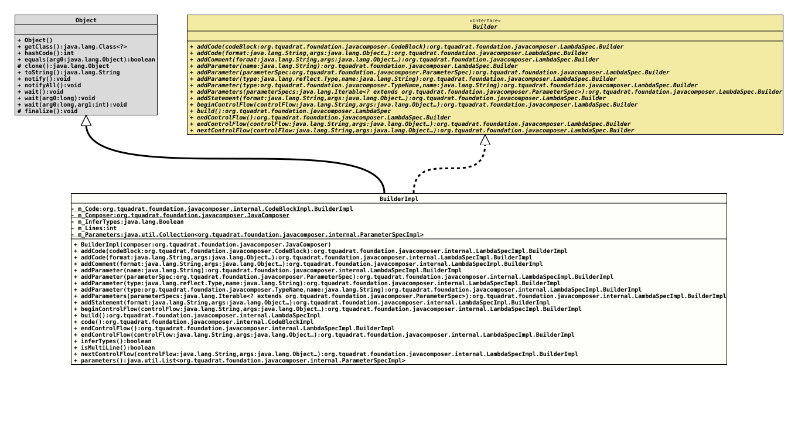

Class LambdaSpecImpl.BuilderImpl
- All Implemented Interfaces:
LambdaSpec.Builder
- Enclosing class:
LambdaSpecImpl
LambdaSpec.Builder.- Author:
- Thomas Thrien (thomas.thrien@tquadrat.org)
- Version:
- $Id: LambdaSpecImpl.java 1151 2025-10-01 21:32:15Z tquadrat $
- Since:
- 0.0.5
- UML Diagram
-

UML Diagram for "org.tquadrat.foundation.javacomposer.internal.LambdaSpecImpl.BuilderImpl"
{kind=link}
-
Field Summary
FieldsModifier and TypeFieldDescriptionprivate final CodeBlockImpl.BuilderImplThe code for the lambda body.private final JavaComposerThe reference to the factory.private BooleanFlag that indicates whether the parameter types will be inferred.private intThe flag is used to determine the emit format.private final Collection<ParameterSpecImpl> The parameters for the lambda. -
Constructor Summary
Constructors -
Method Summary
Modifier and TypeMethodDescriptionAdds code for the lambda body.Adds code for the lambda body.addComment(String format, Object... args) Adds a comment for the lambda body.addParameter(Type type, String name) Adds a parameter for the lambda.addParameter(String name) Adds a parameter for the lambda.addParameter(ParameterSpec parameterSpec) Adds a parameter for the lambda.addParameter(TypeName type, String name) Adds a parameter for the lambda.addParameters(Iterable<? extends ParameterSpec> parameterSpecs) Adds parameters for the lambda.addStatement(String format, Object... args) Adds a statement to the code for the lambda body.beginControlFlow(String controlFlow, Object... args) Adds the begin of a control flow for the lambda body.final LambdaSpecImplbuild()Creates a newLambdaSpecinstance from the components that have been added to this builder.final CodeBlockImplcode()Returns the code for the lambda body.Ends the current control flow for the lambda body.endControlFlow(String controlFlow, Object... args) Ends the current control flow for the lambda body; this version is only used fordo-whileconstructs.final booleanReturns the flag that indicates whether the types of the parameters will be inferred.final booleanReturn the flag that indicates the emit format.nextControlFlow(String controlFlow, Object... args) Begins another control flow for the lambda body.final List<ParameterSpecImpl> Returns the parameters for the lambda.
-
Field Details
-
m_Code
The code for the lambda body. -
m_Composer
The reference to the factory. -
m_InferTypes
Flag that indicates whether the parameter types will be inferred. -
m_Lines
The flag is used to determine the emit format. -
m_Parameters
The parameters for the lambda.
-
-
Constructor Details
-
BuilderImpl
Creates a newBuilderImplinstance.- Parameters:
composer- The reference to the factory that created this builder instance.
-
-
Method Details
-
addCode
Adds code for the lambda body.
If only this method is called only once to add code to the lambda body, the short, single line form for the lambda expression will be emitted. That this will result in valid code requires that the given code block has an appropriate contents.
- Specified by:
addCodein interfaceLambdaSpec.Builder- Parameters:
codeBlock- The code.- Returns:
- This
Builderinstance.
-
addCode
Adds code for the lambda body.
If only this method is called only once to add code to the lambda body, the short, single line form for the lambda expression will be emitted.
- Specified by:
addCodein interfaceLambdaSpec.Builder- Parameters:
format- The format.args- The arguments.- Returns:
- This
Builderinstance.
-
addComment
Adds a comment for the lambda body.
A call to this method forces the multi-line emit format for the lambda expression.
- Specified by:
addCommentin interfaceLambdaSpec.Builder- Parameters:
format- The format.args- The arguments.- Returns:
- This
Builderinstance.
-
addParameter
Adds a parameter for the lambda.
The type of the parameter is inferred.
- Specified by:
addParameterin interfaceLambdaSpec.Builder- Parameters:
name- The name of the parameter.- Returns:
- This
Builderinstance.
-
addParameter
Adds a parameter for the lambda. Only type and name of the given parameter are considered, annotations or modifiers will be ignored.- Specified by:
addParameterin interfaceLambdaSpec.Builder- Parameters:
parameterSpec- The parameter.- Returns:
- This
Builderinstance.
-
addParameter
Adds a parameter for the lambda.- Specified by:
addParameterin interfaceLambdaSpec.Builder- Parameters:
type- The type of the parameter.name- The name of the parameter.- Returns:
- This
Builderinstance.
-
addParameter
Adds a parameter for the lambda.- Specified by:
addParameterin interfaceLambdaSpec.Builder- Parameters:
type- The type of the parameter.name- The name of the parameter.- Returns:
- This
Builderinstance.
-
addParameters
public final LambdaSpecImpl.BuilderImpl addParameters(Iterable<? extends ParameterSpec> parameterSpecs) Adds parameters for the lambda. Only type and name of the given parameters are considered, annotations or modifiers will be ignored.- Specified by:
addParametersin interfaceLambdaSpec.Builder- Parameters:
parameterSpecs- The parameters.- Returns:
- This
Builderinstance.
-
addStatement
Adds a statement to the code for the lambda body.
A call to this method forces the multi-line emit format for the lambda expression.
- Specified by:
addStatementin interfaceLambdaSpec.Builder- Parameters:
format- The format.args- The arguments.- Returns:
- This
Builderinstance.
-
beginControlFlow
Adds the begin of a control flow for the lambda body.
A call to this method forces the multi-line emit format for the lambda expression.
- Specified by:
beginControlFlowin interfaceLambdaSpec.Builder- Parameters:
controlFlow- The control flow construct and its code, such as "if (foo == 5)"; it should not contain braces or newline characters.args- The arguments.- Returns:
- This
Builderinstance. - See Also:
-
build
Creates a newLambdaSpecinstance from the components that have been added to this builder.- Specified by:
buildin interfaceLambdaSpec.Builder- Returns:
- The
MethodSpecinstance.
-
code
-
endControlFlow
Ends the current control flow for the lambda body.
A call to this method forces the multi-line emit format for the lambda expression.
- Specified by:
endControlFlowin interfaceLambdaSpec.Builder- Returns:
- This
Builderinstance. - See Also:
-
endControlFlow
Ends the current control flow for the lambda body; this version is only used for
do-whileconstructs.A call to this method forces the multi-line emit format for the lambda expression.
- Specified by:
endControlFlowin interfaceLambdaSpec.Builder- Parameters:
controlFlow- The optional control flow construct and its code, such as "while(foo == 20)"; it should not contain braces or newline characters.args- The arguments.- Returns:
- This
Builderinstance. - See Also:
-
inferTypes
Returns the flag that indicates whether the types of the parameters will be inferred.- Returns:
trueif the parameter types are inferred,falseif they are explicit.
-
isMultiLine
Return the flag that indicates the emit format.- Returns:
trueif the multi-line format with curly braces and a return statement is to be emitted,falseif the single line format can be used.
-
nextControlFlow
Begins another control flow for the lambda body.
A call to this method forces the multi-line emit format for the lambda expression.
- Specified by:
nextControlFlowin interfaceLambdaSpec.Builder- Parameters:
controlFlow- The control flow construct and its code, such as "else if (foo == 10)"; it should not contain braces or newline characters.args- The arguments.- Returns:
- This
Builderinstance. - See Also:
-
parameters
Returns the parameters for the lambda.- Returns:
- The parameters.
-